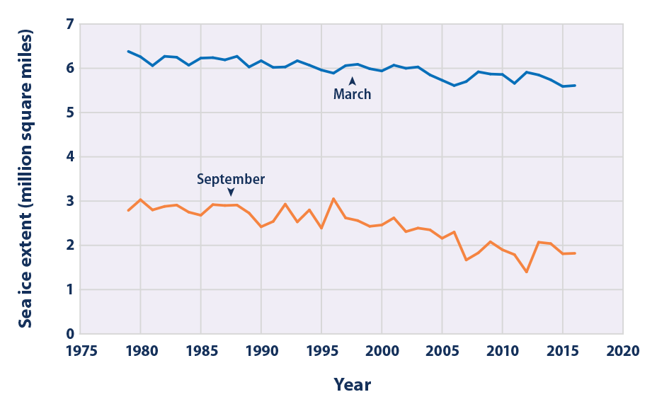
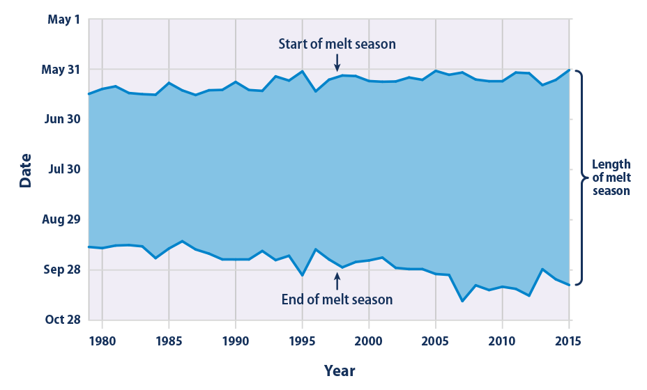
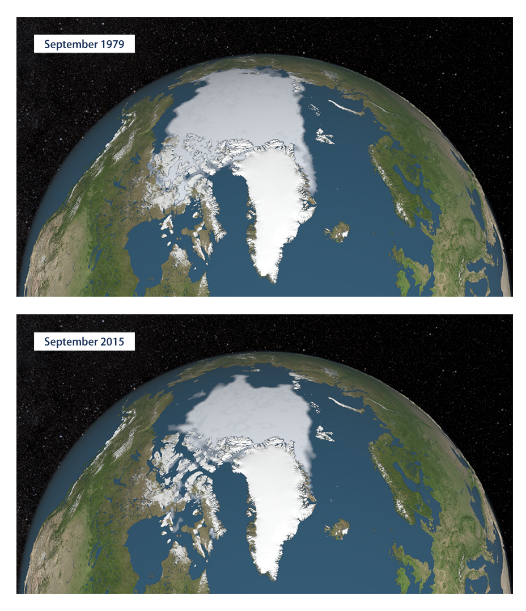

Climate Change Indicators: Arctic Sea Ice
This indicator tracks the extent, age, and melt season of sea ice in the Arctic Ocean.
- 
This figure shows Arctic sea ice extent for the months of September and March of each year from 1979 through 2016. September and March are when the minimum and maximum extent typically occur each year.
Data source: NSIDC, 20164
Web update: November 2016 -

This figure shows the distribution of Arctic sea ice extent by age group during the week in September with the smallest extent of ice for each year. The total extent in Figure 2 differs from the extent in Figure 1 because Figure 1 shows a monthly average, while Figure 2 shows conditions during a single week.
Data source: NSIDC, 20155
Web update: December 2015 - 
This figure shows the timing of each year’s Arctic sea ice melt season. The shaded band spans from the date when ice begins to melt consistently until the date when it begins to refreeze.
Data source: NASA, 20166
Web update: August 2016 - 
Source: NASA, 20167
Web update: August 2016

Key Points
- September 2012 had the lowest sea ice extent ever recorded, 44 percent below the 1981–2010 average for that month.
- The September 2016 sea ice extent was more than 700,000 square miles less than the historical 1981–2010 average for that month (see Figure 1)—a difference more than two and a half times the size of Texas. March sea ice extent reached the lowest extent on record in 2015 and hit roughly the same low again in 2016—about 7 percent less than the 1981–2010 average.
- All months have shown a negative trend in sea ice extent over the past several decades. The largest year-to-year decreases have occurred in the summer and fall months.2,3
- Evidence of the age of Arctic sea ice suggests that fewer patches of ice are persisting for multiple years (i.e., generally thick ice that has survived one or more melt seasons) (see Figure 2). The proportion of sea ice five years or older has declined dramatically over the recorded time period, from more than 30 percent of September ice in the 1980s to 9 percent in 2015. A growing percentage of Arctic sea ice is only one or two years old. Less old multi-year ice implies that the ice cover is thinning, which makes it more vulnerable to further melting.
- Since 1979, the length of the melt season for Arctic sea ice has grown by 37 days (see Figure 3). Arctic sea ice now starts melting 11 days earlier and it starts refreezing 26 days later than it used to, on average (see Figure 3).
Background
Sea ice is an integral part of the Arctic Ocean. During the dark winter months, sea ice essentially covers the entire Arctic Ocean. In summer, some of this ice melts because of warmer temperatures and long hours of sunlight. Sea ice typically reaches its minimum thickness and extent in mid-September, when the area covered by ice is roughly half the size of the winter maximum. The ice then begins expanding again.
The extent of area covered by Arctic sea ice is an important indicator of changes in global climate because warmer air and water temperatures are reducing the amount of sea ice present. Because sea ice is light-colored, it reflects more sunlight (solar energy) back to space than liquid water, thereby playing an important role in maintaining the Earth’s energy balance and helping to keep polar regions cool. (For more information on the effects of surface color on reflecting sunlight, see the Snow Cover indicator.) Sea ice also keeps the air cool by forming a barrier between the cold air above and the relatively warmer water below. As the amount of sea ice decreases, the Arctic region’s cooling effect is reduced, and this may initiate a “feedback loop” whereby ocean warming caused by more absorption of solar energy leads to an even greater loss of sea ice and further warming.
The age of sea ice is also an important indicator of Arctic conditions, because ice that has accumulated over many years is generally thicker and stronger than younger ice. A loss of older ice suggests that the Arctic ice cover is becoming thinner. Evidence also suggests that the melt season has become longer; the ice is starting to melt earlier in the year and freeze later than it used to.1
Changes in sea ice can directly affect the health of Arctic ecosystems. Mammals such as polar bears and walruses rely on the presence of sea ice for hunting, breeding, and migrating. These animals face the threat of declining birth rates and restricted access to food sources because of reduced sea ice coverage and thickness. Impacts on Arctic wildlife, as well as the loss of ice itself, are already restricting the traditional subsistence hunting lifestyle of indigenous Arctic populations such as the Yup’ik, Iñupiat, and Inuit.
While diminished sea ice can have negative ecological effects, it can also present commercial opportunities. For instance, reduced sea ice opens shipping lanes and increases access to natural resources in the Arctic region.
About the Indicator
Figure 1 shows Arctic sea ice extent from 1979, when routine monitoring by satellites started, to 2016. Sea ice extent is defined as the area of ocean where at least 15 percent of the surface is frozen. This threshold was chosen because scientists have found that it gives the best approximation of the edge of the ice. Data are collected throughout the year, but for comparison, this indicator focuses on the months when sea ice typically reaches its minimum and maximum extent. September is typically when the sea ice extent reaches its annual minimum after melting during the spring and summer. Conversely, March is typically when sea ice reaches its maximum extent after winter freezing. Data for this indicator were gathered by the National Snow and Ice Data Center using satellite imaging technology and data processing methods developed by the National Aeronautics and Space Administration.
Figure 2 examines the age of the ice that is present in the Arctic during the one week in September that has the smallest extent of ice. By combining daily satellite images, wind measurements, and data from surface buoys that move with the ice, scientists can track specific parcels of ice as they move over time. This tracking enables them to calculate the age of the ice in different parts of the Arctic. Although satellites started collecting data in 1979, Figure 2 only shows data back to 1983 because it is not possible to know the full age distribution until the ice has been tracked for at least five years.
Figure 3 shows the start and end dates of each year’s Arctic sea ice melt season, starting in 1979. It is based on the same satellite instruments as Figure 1. Here, the melt season start date is defined as the date when satellites detect consistent wetness on the surface of the ice and snow; the end date is when the surface air temperature stays consistently at or below the freezing point and ice begins to grow in the open ocean.
Indicator Notes
Increasing air and ocean temperatures associated with climate change are not the only factor contributing to reductions in sea ice. Other conditions that may be affected by climate change, such as fluctuations in oceanic and atmospheric circulation and natural annual and decadal variability, also affect the extent of sea ice. Determining the age of ice is an imperfect science, as there are cases where a small amount of older ice might exist within an area classified as younger, or vice versa.
Data Sources
The data for Figures 1 and 2 were provided by the National Snow and Ice Data Center. Data for Figure 1 are also available online at: http://nsidc.org/data/seaice_index/archives.html, while Figure 2 is based on an analysis by the University of Colorado and a map published at: http://nsidc.org/arcticseaicenews/2015/10/2015-melt-season-in-review. The National Snow and Ice Data Center produces a variety of reports and a seasonal newsletter analyzing Arctic sea ice data. Figure 3 data were provided by the National Aeronautics and Space Administration and are available at: https://neptune.gsfc.nasa.gov/csb/index.php?section=54.
Technical Documentation
References
1. IPCC (Intergovernmental Panel on Climate Change). 2013. Climate change 2013: The physical science basis. Working Group I contribution to the IPCC Fifth Assessment Report. Cambridge, United Kingdom: Cambridge University Press. www.ipcc.ch/report/ar5/wg1.
2. NSIDC (National Snow and Ice Data Center). 2012. Arctic sea ice 101. http://nsidc.org/icelights/arctic-sea-ice.
3. Comiso, J. 2012. Large decadal decline of the Arctic multiyear ice cover. J. Climate 25(4):1176–1193.
4. NSIDC (National Snow and Ice Data Center). 2016. Sea ice data and image archive. Accessed October 2016. http://nsidc.org/data/seaice_index/archives.html.
5. NSIDC (National Snow and Ice Data Center). 2015. Arctic sea ice news and analysis. October 6, 2015. http://nsidc.org/arcticseaicenews/2015/10/2015-melt-season-in-review
6. NASA (National Aeronautics and Space Administration). 2016. Arctic sea ice melt. https://neptune.gsfc.nasa.gov/csb/index.php?section=54
7. NASA (National Aeronautics and Space Administration). 2016. NASA’s Goddard Space Flight Center Scientific Visualization Studio. https://svs.gsfc.nasa.gov